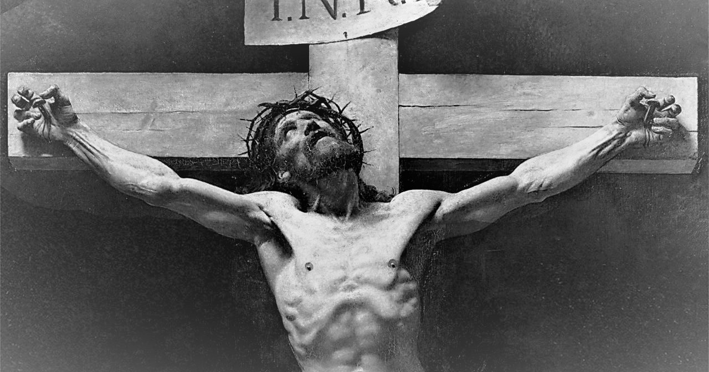

ABOUT JESUS
Jesus Christ, born 0BC, son of Mary and Joseph (also, God). Part of the Holy Trinity, a gang comprising Jesus, his Father, God, and a friend, nicknamed, The Holy Spirit
Not His Best Bit!
Jesus's Best bits!
- Trained carpenter
- Aquatic transit expert
- Qualified baker and winemaker
- Most depictions have Jesus somewhere between buff and swole. Research suggests he was, in fact, incredibly swole
Jesus's Friends
Jesus has some brilliant pals, called 'apostles'. Click the links below to find out more!